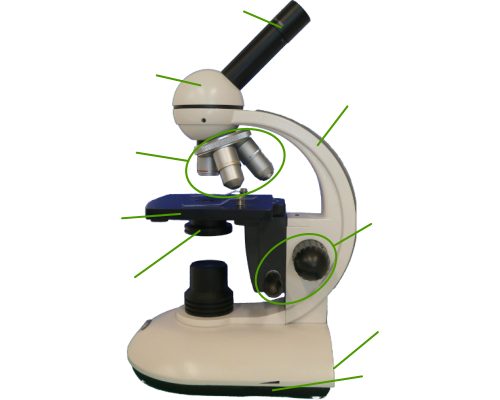

Méthode à suivre Régler au petit grossissement Régler au moyen grossissement Régler au fort grossissement Calculer un grossissement Ajuster le confort d'observation Autoévaluation
Matériel  oculaire tête objectifs potence platine diaphragme vis de miseau point interrupteur variateur